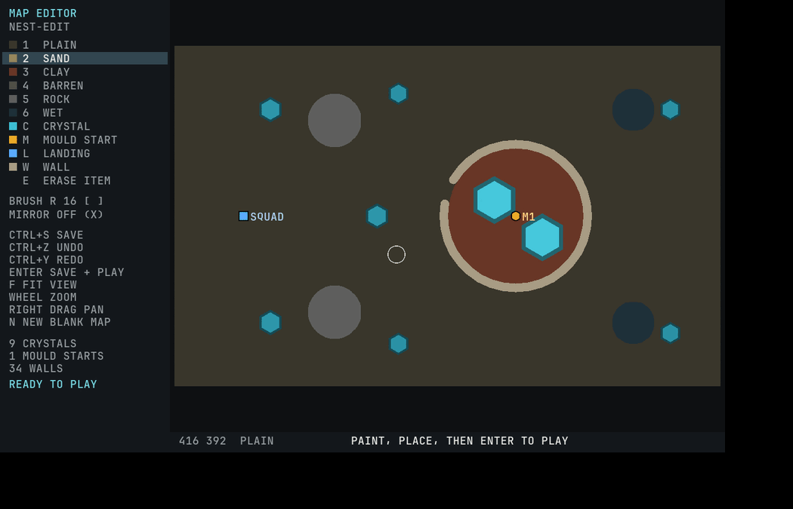
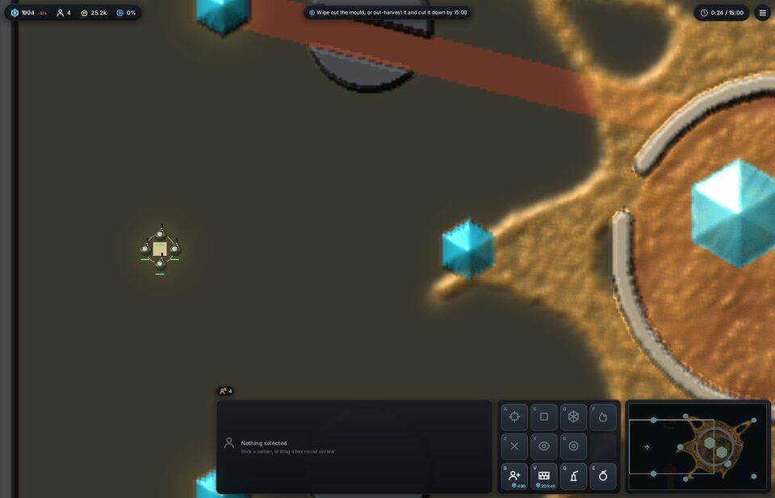
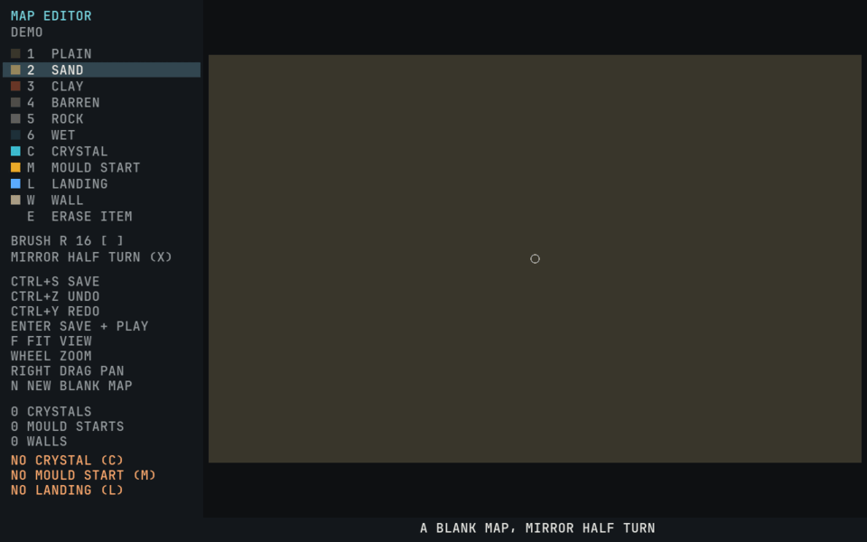
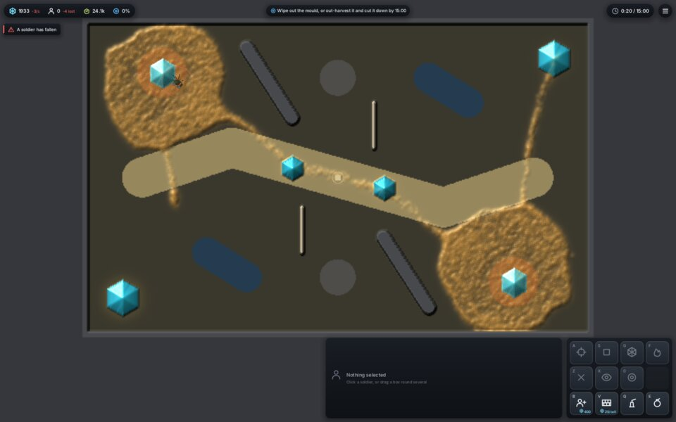
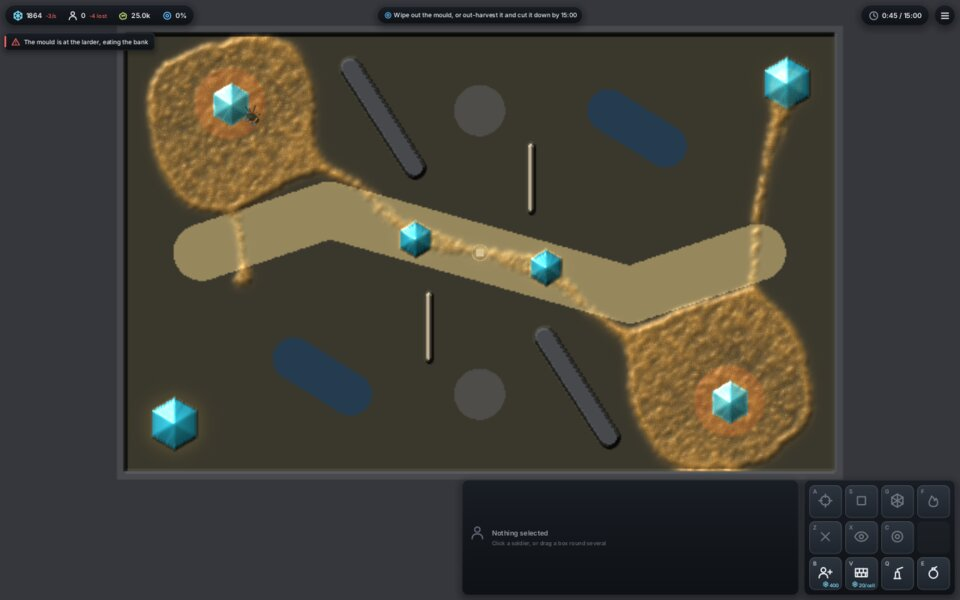

<title>Larder Map Editor</title>
<meta name="claude:viewport-fit-sides" content="cover">
<link rel="stylesheet" href="https://fonts.googleapis.com/css2?family=IBM+Plex+Sans:wght@400;600&family=IBM+Plex+Mono:wght@400;600&display=swap">
<style>
/* Layout: one reading column; each film or still full width with its counts beside it as a caption. */
:root {
  --bg: #eef0ee; --panel: #ffffff; --fg: #1d2224; --muted: #5a6468; --line: #d3d9d8; --accent: #1f8a99;
  --sans: "IBM Plex Sans", system-ui, sans-serif; --mono: "IBM Plex Mono", ui-monospace, monospace;
}
@media (prefers-color-scheme: dark) { :root:not([data-theme="light"]) {
  --bg: #14181b; --panel: #1c2226; --fg: #e4e8e6; --muted: #9aa6aa; --line: #2c353a; --accent: #6fd0dc; color-scheme: dark } }
:root[data-theme="dark"] { --bg: #14181b; --panel: #1c2226; --fg: #e4e8e6; --muted: #9aa6aa; --line: #2c353a; --accent: #6fd0dc; color-scheme: dark }
body { background: var(--bg); color: var(--fg); font-family: var(--sans); font-size: 15px; line-height: 1.55;
  padding-left: max(16px, env(safe-area-inset-left, 0px)); padding-right: max(16px, env(safe-area-inset-right, 0px)); padding-block: 28px 48px; }
main { max-width: 980px; margin: 0 auto; display: grid; gap: 28px; }
h1 { font-size: 28px; margin: 0; text-wrap: balance; }
h2 { font-size: 18px; margin: 0 0 8px; text-wrap: balance; }
p { margin: 0; max-width: 68ch; }
.lede { color: var(--muted); }
code, kbd { font-family: var(--mono); font-size: 13px; }
kbd { border: 1px solid var(--line); border-radius: 4px; padding: 0 5px; background: var(--panel); }
figure { margin: 0; display: grid; gap: 8px; }
figure img { width: 100%; border-radius: 6px; border: 1px solid var(--line); display: block; }
figcaption { color: var(--muted); font-size: 14px; max-width: 80ch; }
figcaption b { color: var(--fg); font-variant-numeric: tabular-nums; }
.keys { display: grid; grid-template-columns: repeat(auto-fill, minmax(220px, 1fr)); gap: 6px 20px; font-size: 14px; }
.keys div { min-width: 0; }
.cmd { background: var(--panel); border: 1px solid var(--line); border-radius: 6px; padding: 10px 12px; overflow-x: auto; font-family: var(--mono); font-size: 13px; }
.pair { display: grid; grid-template-columns: repeat(auto-fit, minmax(280px, 1fr)); gap: 16px; }
</style>
<main>
  <header style="display:grid;gap:8px">
    <h1>Larder World map editor</h1>
    <p class="lede">Paint the ground, place crystals, mould starts, the squad's landing and walls, save to the map files the game already loads, and press Enter to play the map. Built and checked in the cloud on software Vulkan, 2026-11-14.</p>
    <div class="cmd">cargo run --release --bin larder-edit -- map=fork name=my-fork</div>
  </header>

  <section>
    <h2>The real window, driven step by step</h2>
    <figure>
      
      <figcaption>Opened the Nest, then: <kbd>3</kbd> clay stroke, <kbd>5</kbd> rock stroke, <kbd>C</kbd> a crystal, <kbd>W</kbd> a wall dragged, <kbd>E</kbd> erase the crystal, <kbd>Ctrl+Z</kbd> undo, <kbd>Ctrl+S</kbd> save. <b>10 crystals, 1 mould start, 35 walls</b> after the edits; the panel says ready to play.</figcaption>
    </figure>
  </section>

  <section>
    <h2>Enter plays it</h2>
    <figure>
      
      <figcaption>Enter saved the map and started <code>larder-world map=…/nest-edit</code> beside the editor. Its window at <b>0:24</b>: <b>4 soldiers</b>, <b>25.2k mould</b>, the new clay band and wall in the world.</figcaption>
    </figure>
  </section>

  <section>
    <h2>A mirrored map from blank</h2>
    <figure>
      
      <figcaption>The half-turn mirror draws every stroke and item twice. <b>13 steps</b>: a sand belt, clay pockets by the starts, rock ridges, wet hollows, barren patches, <b>6 crystals</b>, <b>2 mould starts</b>, the landing, <b>2 walls</b>.</figcaption>
    </figure>
    <div class="pair" style="margin-top:16px">
      <figure>
        
        <figcaption>Played (rush hand) at <b>20 s</b>: two moulds, each held in its clay pocket, sending tubes along the sand. The rush squad lost <b>4 of 4</b>, killing <b>1,158</b> walkers with <b>45</b> shots.</figcaption>
      </figure>
      <figure>
        
        <figcaption>At <b>45 s</b>: <b>24,991</b> walkers, crystals at <b>99.4%</b>.</figcaption>
      </figure>
    </div>
  </section>

  <section>
    <h2>Keys</h2>
    <div class="keys">
      <div><kbd>1</kbd>–<kbd>6</kbd> plain, sand, clay, barren, rock, wet</div>
      <div><kbd>C</kbd> crystal (hexagon)</div>
      <div><kbd>M</kbd> mould start (several allowed)</div>
      <div><kbd>L</kbd> squad landing</div>
      <div><kbd>W</kbd> wall (drag)</div>
      <div><kbd>E</kbd> erase nearest item</div>
      <div><kbd>[</kbd> <kbd>]</kbd> brush or crystal size</div>
      <div><kbd>X</kbd> mirror: off, left-right, half turn</div>
      <div><kbd>Ctrl+Z</kbd> / <kbd>Ctrl+Y</kbd> undo, redo</div>
      <div><kbd>Ctrl+S</kbd> save, <kbd>Enter</kbd> save and play</div>
      <div><kbd>F</kbd> fit, wheel zoom, right drag pan</div>
      <div><kbd>N</kbd> blank map</div>
    </div>
  </section>

  <section>
    <p class="lede">Saves go to <code>maps/NAME</code> in the repo; the designed maps are only read. Other <code>key=value</code>s given to the editor, such as <code>seed=3</code> or <code>tier=sleeper</code>, are passed to the game on Enter. Report: <code>Reports/map-editor-2026-11-14/README.md</code>.</p>
  </section>
</main>
